Nos prestations
Tresses, braids, locks, extensions, perruques — chaque prestation est présentée avec ses réalisations et un bouton de réservation direct.
⚠️ Tous les prix affichés sont « à partir de » — tarif final communiqué après consultation selon longueur, densité et type de cheveux.
Tresse plaquée · Passe-mèche 7 photos
Tresses réalisées à même le cuir chevelu par entrelacement progressif de mèches, formant des rangées plaquées (lignes droites ou motifs géométriques). (Wikipedia FR — Cornrows)
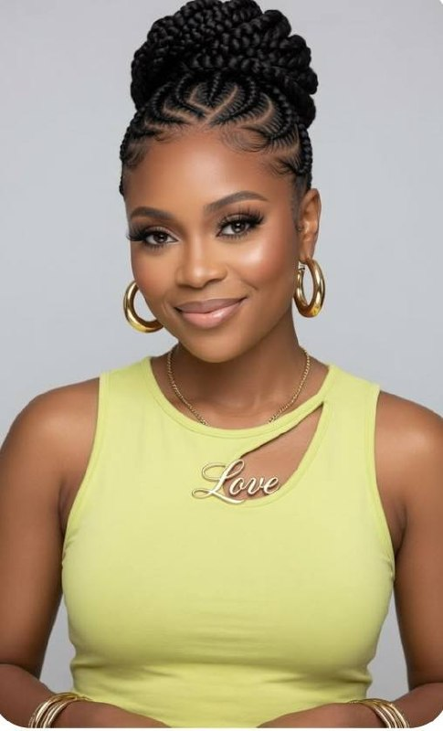


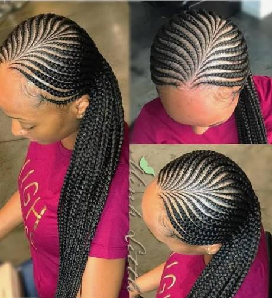
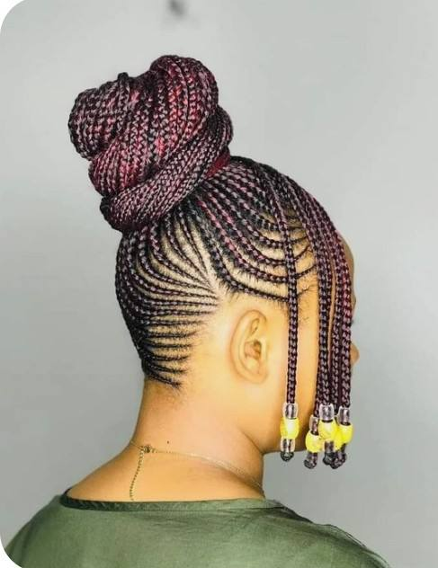
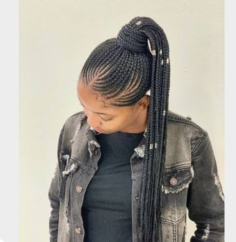
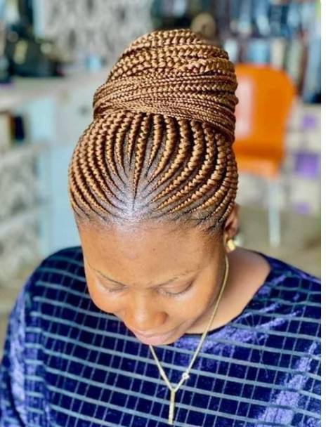
Box braid / Twist / Knotless (sans nœuds) / Rasta — petit, moyen, large 6 photos
Mèches de cheveux (naturels ou synthétiques) tressées ou torsadées séparément puis fixées aux cheveux naturels. Le box braid forme des sections carrées, le knotless démarre sans nœud à la racine. (Wikipedia FR — Vanilles + Cornrows)
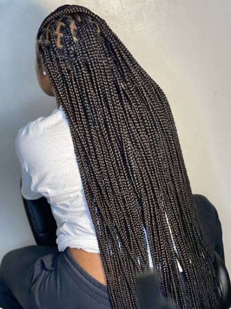
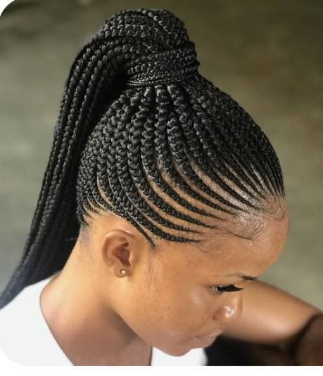

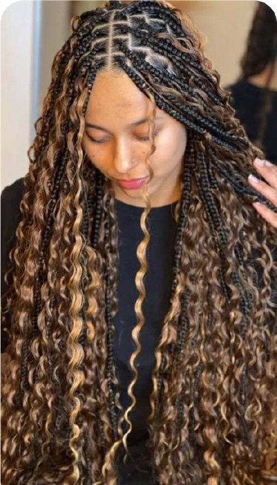
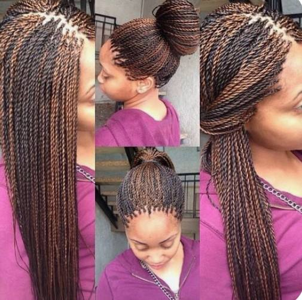
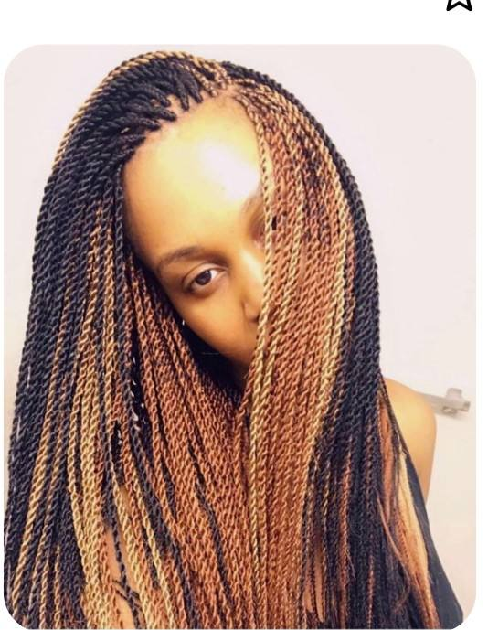
Locks / Locs 2 photos
Mèches de cheveux emmêlées et compactées formant des cordons plus ou moins épais, obtenues par non-démêlage ou par travail manuel/peigne. (Wikipedia FR — Dreadlocks)
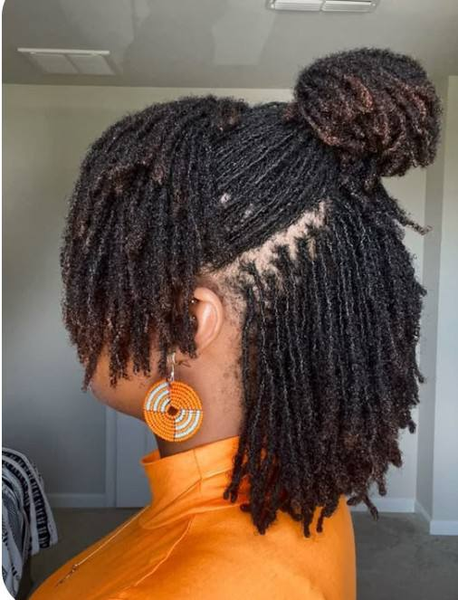

Boho braid / Crochet 6 photos
Tresses africaines ornées de mèches bouclées ajoutées à l'aide d'un crochet sur des nattes plaquées, pour un rendu bohème volumineux. (Adapté Wikipedia FR — Extension_capillaire (méthode crochet))
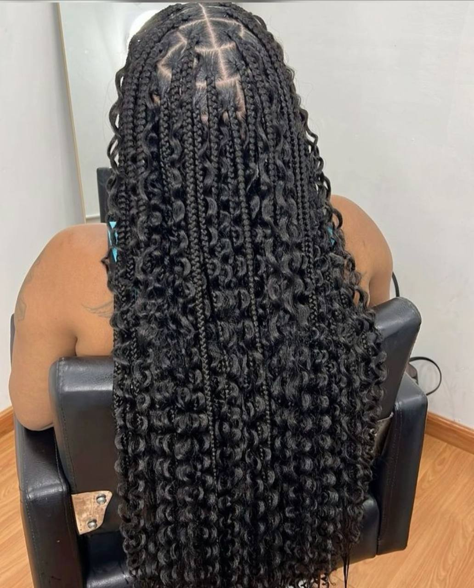
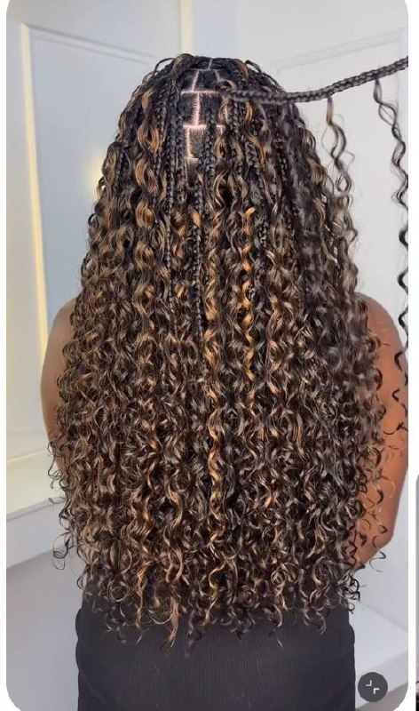

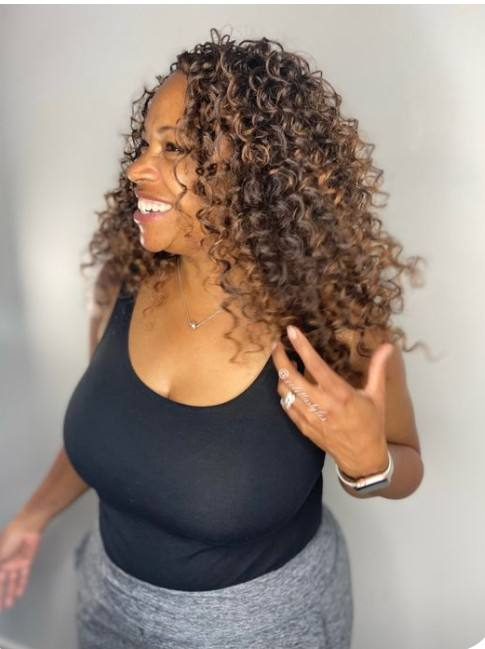
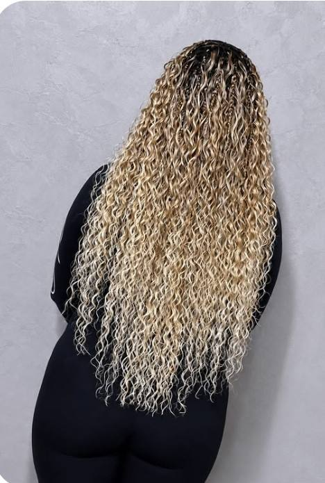
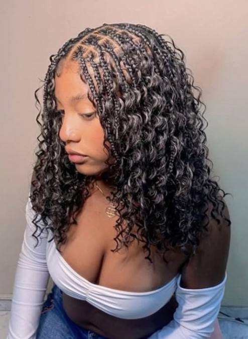
Dread locs / Sister locs / Micro locs / Micro twist 6 photos
Mèches de cheveux fins et emmêlés de petit diamètre. Les « sisterlocks » sont une marque déposée de micro-locks posés avec un outil spécifique. (Wikipedia FR — Dreadlocks)
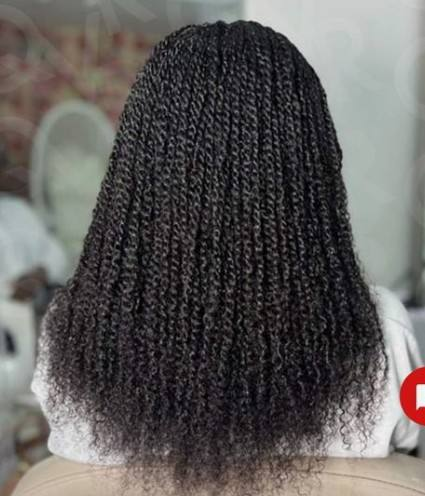
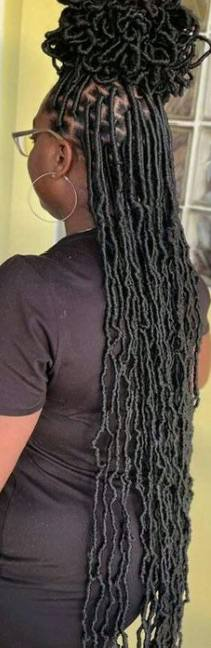
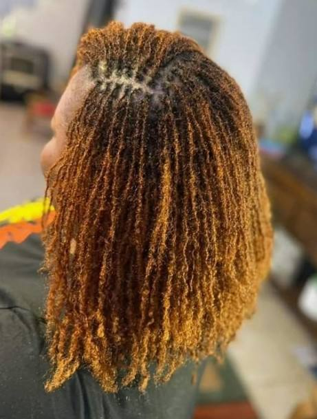
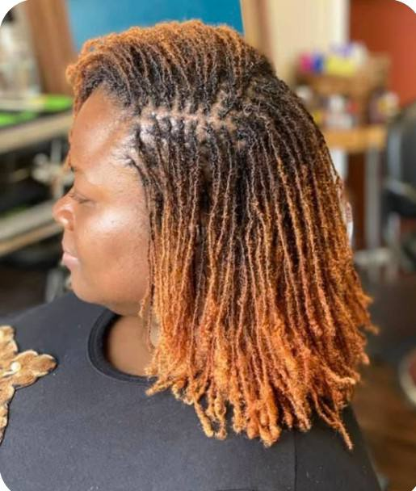
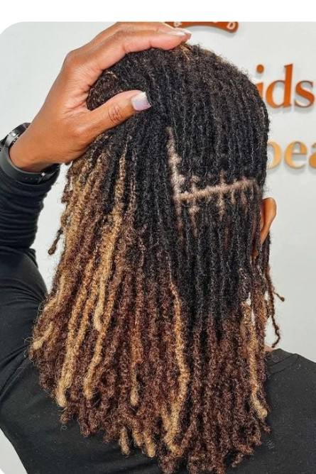

Tissage (fermé / ouvert / milieu) 5 photos
Bandes de cheveux (wefts) cousues sur des nattes plaquées. La méthode fermée (africaine) cache la couture, l'ouverte laisse le tissage apparent. (Wikipedia FR — Extension_capillaire)
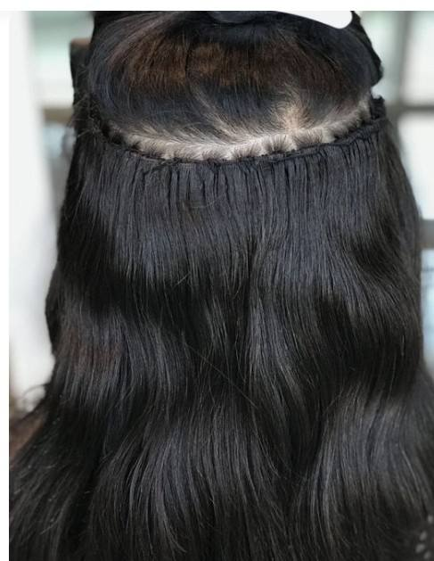
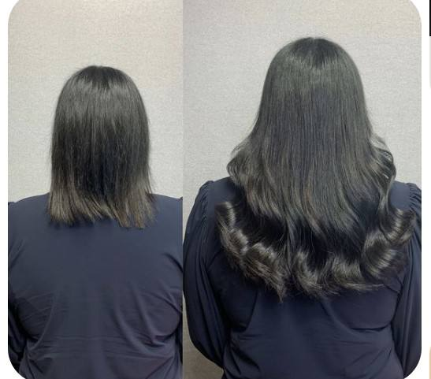
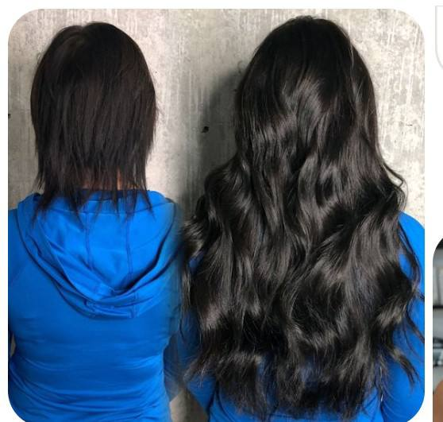

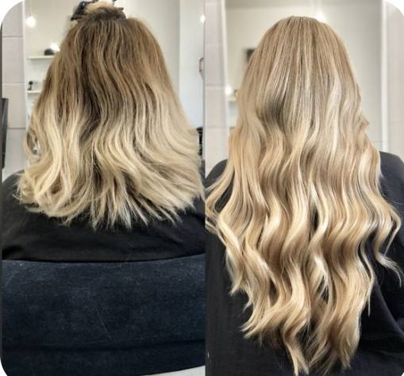
Weft extension sans colle / Microring 5 photos
Pose à froid : une mèche d'extension et une mèche naturelle sont passées dans un petit anneau métallique, puis serties avec une pince. (Wikipedia FR — Extension_capillaire)

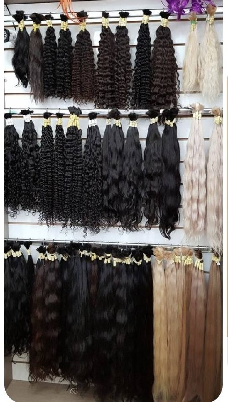

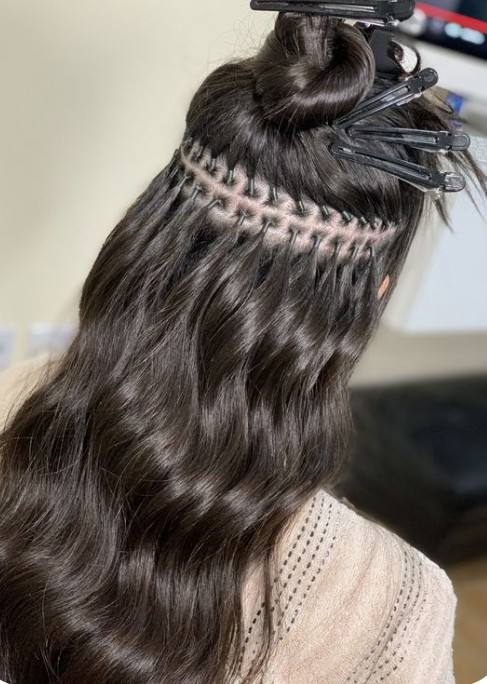
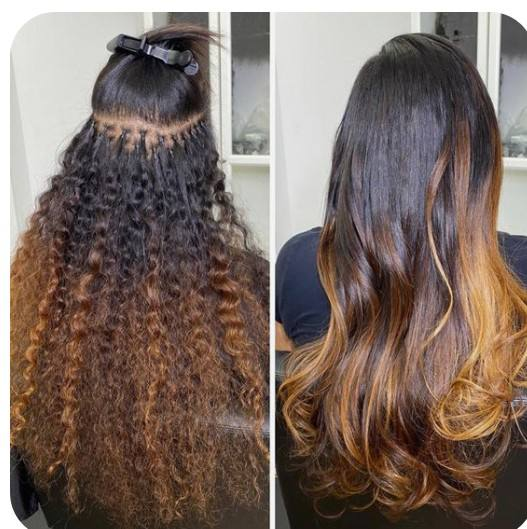
Tip extension (I-tip / U-tip) 2 photos
Mèches d'extension terminées par une pointe (I) ou une ombilicale en U, fixées par micro-anneaux à froid ou kératine froide sur les cheveux naturels. (Wikipedia FR — Extension_capillaire)
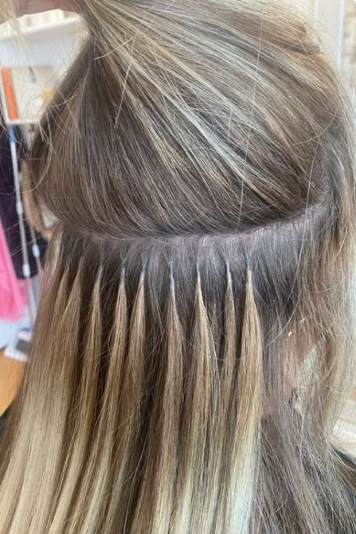

Extension Kératine (avec colle chaude) 4 photos
Pose à chaud : une mèche d'extension portant un point de kératine à son extrémité est fondue à la pince chauffante sur la mèche naturelle. (Wikipedia FR — Extension_capillaire)
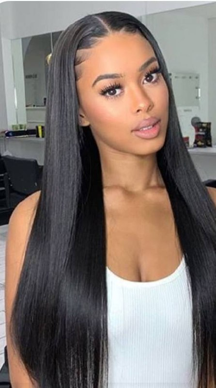
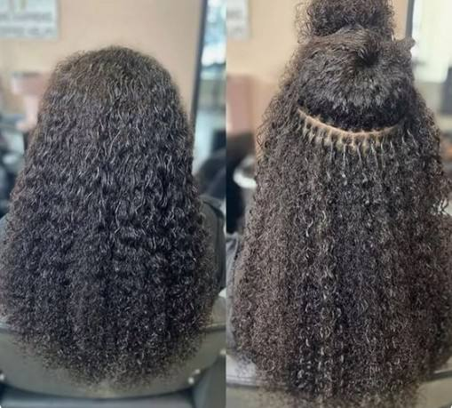

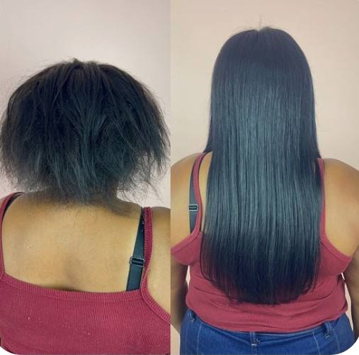
Pose perruque lace wigs (avec / sans colle) 2 photos
Perruque construite sur une base en dentelle (lace) imitant la racine des cheveux, fixée par colle ou par élastique sur le crâne. (Wikipedia FR — Lace_wig)

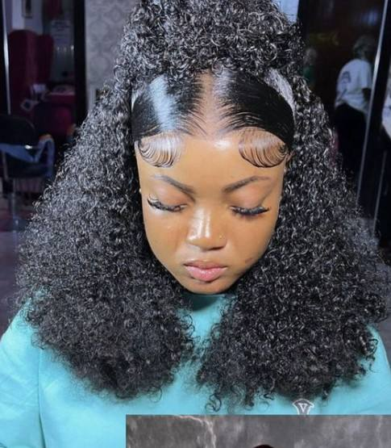
Extension au fil / piqué / lâché
Pose à froid : une mèche d'extension est attachée à une mèche naturelle à l'aide d'un fil (élastique ou de couture) suivant la couleur des cheveux. (Wikipedia FR — Extension_capillaire)
Technique d'attache au fil
Consultation avant Braids / Tresses
Premier rendez-vous pour définir la coiffure, la longueur, le type de mèches, et estimer le tarif final selon votre type de cheveux.